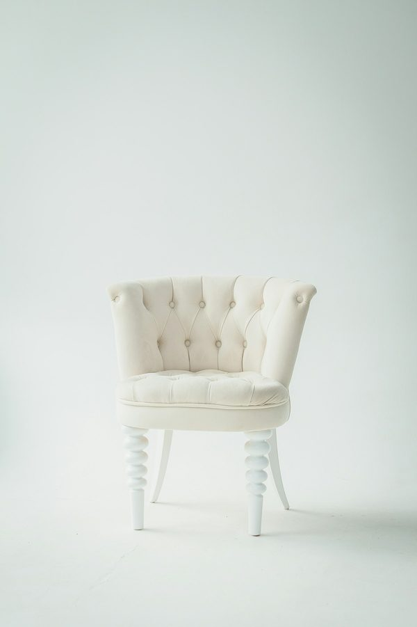

2026년 7월, 광진구 광나루역 인근 한강변에 국내에 없던 건물이 들어설 준비를 하고 있다. 하이브리드 목구조로 지어지는 다목적 국제경기장이다. 공모를 거쳐 ㈜가와종합건축사사무소·건축사사무소 이색·디디건축사사무소가 공동으로 당선됐고, 당선작은 국내 대형 건축물에서는 보기 드문 목구조 원형 경기장을 제안했다. 총사업비 1,999억 원, 2028년 4월 착공, 2031년 8월 준공. 헤드라인 뒤에는 더 큰 질문이 있다. 왜 나무인가, 그리고 왜 지금인가.
콘크리트 대신 나무를 고른 이유
하이브리드 목구조는 CLT(직교집성판)·집성재 같은 엔지니어드 매스팀버를 주 구조로 쓰고, 하중이 큰 지점에만 철골이나 콘크리트를 섞는 방식이다. 환경 논리는 단순하다. 시멘트와 철강은 건설에서 가장 탄소를 많이 배출하는 자재인 반면, 목재는 나무가 자라며 흡수한 탄소를 그대로 저장한다. 이 규모의 건물에서 나무를 주 구조로 택한 것은 겉멋이 아니다. 운영 단계 에너지뿐 아니라 구조체 자체가 품은 탄소(내재탄소)까지 이제 계산서에 올린다는 선언에 가깝다.
다만 두 가지 단서를 붙여야 정직하다. 첫째, 탄소 효과는 목재가 지속가능하게 관리된 산림에서 나오고 폐기 단계에서 매립되지 않을 때에만 성립한다. 그렇지 않으면 저장했던 탄소가 다시 대기로 돌아간다. 둘째, 국내 경기장은 엔지니어드 목재의 상당량을 수입에 의존하므로 운송 탄소가 순효과를 깎는다. 그럼에도 매스팀버 공공건축물의 전생애 분석들은 전량 콘크리트 대비 구조체 내재탄소가 유의미하게 줄어든다고 보고한다. 방향은 옳다. 다만 회계를 깨끗하게 유지해야 한다.

세계는 이미 목조 경기장으로
글로벌 맥락에 놓고 보면, 서울은 흐름을 시작하는 게 아니라 합류하는 것이다. 매스팀버는 지난 5년 사이 고급 주택을 넘어 대공간 공공건축으로 넘어왔고, 세계적으로 스타디움·아레나·공연장이 대표 프로젝트로 꼽힌다. 이를 가능케 한 공학 — 강철에 필적하는 강도 대비 무게비를 훨씬 가벼운 중량으로 구현하는 패널 — 은 이제 여러 대륙의 IT 캠퍼스와 시민 시설이 기본값으로 지정할 만큼 성숙했다. 광나루 프로젝트가 눈에 띄는 지점은 규모와 유형이다. 원형 국제경기장은 까다로운 구조 형식이고, 이를 하이브리드 목구조로 하는 것은 한국을 신중한 후발주자가 아니라 적극적 도입국 쪽에 세운다.
"특허나 파일럿은 가능성을 증명한다. 1,999억 원짜리 하이브리드 목구조 국제경기장은 확신을 증명한다 — 어떤 자재가 실험을 멈추고 인프라 선택지가 되는 지점이다."
경기 없는 날, 동네의 마당이 되는 곳
이 한강 구간을 걸어본 사람이라면 지금 그곳이 무엇인지 안다. 어딘가로 가는 길에 스쳐 지나가는 체육시설이다. 계획안은 이곳을 날마다 성격이 바뀌는 장소로 다시 상상한다. 경기가 있는 날에는 태권도·유도·레슬링 같은 투기 종목 국제경기가 열린다. 숨과 충돌의 팽팽한 공기를 가진 종목들이다. 그 외의 모든 날에는 광장동 주민의 생활체육 코트로, 공연의 무대로, 강빛이 지나가는 따뜻한 나무의 방으로 열린다. 이 설계의 조용한 급진성은 여기에 있다. 행사와 행사 사이 텅 비는 기념비가 아니라, 동네가 실제로 쓰는 시민의 방이라는 점이다.
자재 선택에는 역사도 담겨 있다. 우리는 반세기 동안 '영구적'이고 '중요한' 것을 콘크리트와 동일시해 왔다. 나무로 돌아간 공공건축은 그 등식을 조용히 다시 쓴다. 무게보다 온기, 기념비보다 촉감이다. 성공한다면 사람들이 집으로 가져가는 교훈은 경간표나 탄소계수에 관한 것이 아닐 것이다. 뜻밖에도 내 편처럼 느껴졌던 커다란 공공의 방에 대한 기억일 것이다.
편집장 코멘트
ARCHINODE 입장에서 광나루 경기장은 연면적 이상의 신호다. 공공 발주처가 아레나 규모에서 하이브리드 목구조에 2,000억 원 가까이를 건다는 것은, 매스팀버를 주류 구조 선택지로 정당화하고 엔지니어드 목재·내화 목구조 시스템·전문 시공사로 이어지는 공급망 전체를 한국 시장으로 끌어당긴다는 뜻이다. 준공 5년 전인 지금 이 지도를 그리는 브랜드가 이후 프로젝트에 스펙인되는 브랜드가 된다. 자재 인증과 화재공학 솔루션을 주의 깊게 보라. 진짜 시장이 열리는 곳은 거기다.